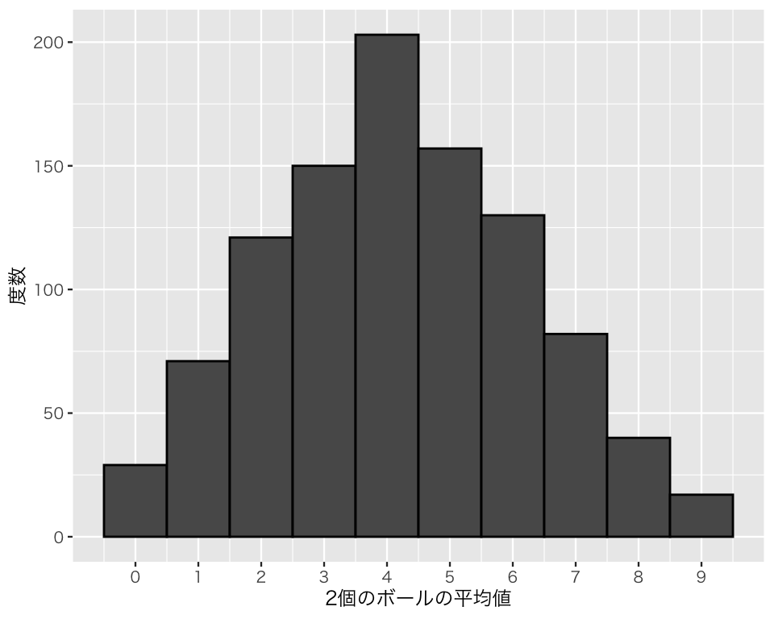
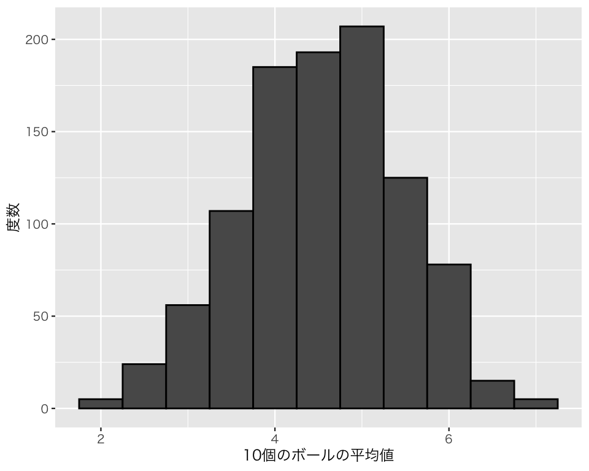

8 中心極限定理
今回の目標
- 中心極限定理を理解しよう！
8.1 準備
必要なパッケージを読み込む。
次に、日本語が正しく表示されるようにする。
## 図のなかで日本語を使えるようにする
## フォントの設定はお好みで
## （Unix/Linux ではIPAexフォントのインストールが必要かも）
if (.Platform$OS.type == "windows") { # Window
if (require(fontregisterer)) {
my_font <- "Yu Gothic"
} else {
my_font <- "Japan1"
}
} else if (capabilities("aqua")) { # macOS
my_font <- "HiraginoSans-W3"
} else { # Unix/Linux
my_font <- "IPAexGothic"
}
theme_set(theme_gray(base_size = 9,
base_family = my_font))8.2 中心極限定理
中心極限定理 (Central Limit Theorem) は、「標本サイズ（サンプルサイズ）が大きくなれば、標本平均は正規分布で近似できる」という定理である（より正確には、「標本サイズを無限大にすると標本平均を標準化したものが標準正規分布に収束する」という定理である）。厳密に理解する（証明する）のはこの授業の範囲を超える（つまり、難しい）。しかし、私たちが統計的推定や検定を行うときに正規分布（特に標準正規分布）ばかり使ってもいいのは、この定理のおかげである。したがって、実際に正規分布ではない分布から正規分布ができるということを理解する必要がある。
そこで、Rでシミュレーションを実行することを通じて中心極限定理を理解しよう。
例として、10個のボールが入った袋を考える。ボールにはそれぞれ0から9までの整数が書いてあるとする。この袋から、ランダムに1つボールを選ぶとすると、選んだボールに書かれた数は、0から9までの整数のどれかで、0から9が選ばれる確率は等しく10分の1（0.1）である。図にすると、以下のようになる。
つまり、ランダムにボールを1つ選ぶというのは、（離散）一様分布からの乱数生成である。 1つボールを選ぶとき、ボールに書かれている数の平均値（期待値）は、\((9 - 0) / 2 = 4.5\) である。
ここで、私たちはボールにどんな数が書かれているか知らない（0から9ではなく、100から109かもしれないし、すべての数が奇数かもしれない）と仮定しよう。この状態で、この袋からボールを引く作業を繰り返し（復元抽出する）、ボールに書かれている数の平均値を当てたい（正解は4.5）。
もっとも単純な方法は、ボールを \(n\) 回引いて、その平均値を使うという方法である。
まず、ボールを2回だけ引いて平均値を当てるという実験を行ってみよう。この実験をすると、1回目のボールの選び方は10通り、2回目のボールの選び方も10通りあるので、全部で100通りの選び方がある。しかし、2つのボールに書かれている数は0から9までの整数なので、可能な合計値は0から18までの19通りであり、平均値は「合計/2」 なので、平均値も19通りしかない。
理論的には、次の図のような確率で、それぞれの平均値が得られる。
この図から、この実験を1回だけ行うとき、正解である4.5が選ばれる確率は0.1 であることがわかる。試しに1回やってみよう。
[1] 6今回は、たまたま6になった。
では、この実験を1,000回繰り返すと「それぞれの回での平均値の分布」はどんな形になるだろうか。実際にやってみよう。
Rで同じ作業を繰り返し行う簡単な方法は、for ループを使うことである。for の直後の丸カッコで繰り返し回数を指定し、ループさせる内容を中括弧 { } で囲む。 たとえば、0からスタートして「1を足す」という作業を5回繰り返すには、次のようにする。
まず、スタート時の数である0を保存する。
a <- 0 # a に0を入れる次に、結果を保存するために、result という名前の入れ物を用意する。NA は「空」の状態を表す（これを欠測値 [missing value] と呼ぶ）。また、 length.out で保存場所が何個分必要か指定する。
result <- rep(NA, length.out = 5) この時点で result の中身を確認してみよう。
result # result の中身を確認する[1] NA NA NA NA NAすべて NA になっている。
forループを利用して、数を1だけ加える作業を5回繰り返す。
for (i in 1 : 5) { # i が1から5までの繰り返し
a <- a + 1 # a に1を足す
result[i] <- a # i番目の足し算の結果を result[i] に入れる
}
result # resultの中身を確認[1] 1 2 3 4 5このループを利用して、ボールを2回引く作業を1,000回繰り返してみよう。
結果をヒストグラムにしてみよう。
df_sim1 <- tibble(avg = sim1)
h_sim1 <- ggplot(df_sim1, aes(x = avg)) +
geom_histogram(binwidth = 1,
boundary = 0.5,
color = "black") +
labs(x = "2個のボールの平均値",
y = "度数") +
scale_x_continuous(breaks = 0 : 9)
plot(h_sim1)
この分布は正規分布に見えるだろうか？
次に、サンプルサイズ \(N\) を2から5に増やし、同様の実験をしてみよう。
結果をヒストグラムにしてみよう。
df_sim2 <- tibble(avg = sim2)
h_sim2 <- ggplot(df_sim2, aes(x = avg)) +
geom_histogram(binwidth = 0.5,
boundary = 0.5,
color = "black") +
labs(x = "5個のボールの平均値",
y = "度数") +
scale_x_continuous(breaks = 0:9)
plot(h_sim2)
この分布は正規分布に見えるだろうか？
サンプルサイズ \(N\) を10に増やしてみよう。
結果をヒストグラムにしてみよう。
df_sim3 <- tibble(avg = sim3)
h_sim3 <- ggplot(df_sim3, aes(x = avg)) +
geom_histogram(binwidth = 0.5,
color = "black") +
labs(x = "10個のボールの平均値", y = "度数")
plot(h_sim3)
この分布は正規分布に見えるだろうか？
サンプルサイズ \(N\) を100に増やしてみよう。
結果をヒストグラムにしてみよう。
df_sim4 <- tibble(avg = sim4)
h_sim4 <- ggplot(df_sim4, aes(x = avg)) +
geom_histogram(binwidth = 0.125,
color = "black") +
labs(x = "100個のボールの平均値", y = "度数")
plot(h_sim4)このように、元の分布は一様分布でも、サンプルサイズ \(N\) を増やすと、「平均値の分布」は正規分布に近づく。よって、サンプルサイズ \(N\) が十分大きい（大まかな目安は \(N > 100\)）とき、正規分布を使って統計的推定や検定を行うことが許される。
実習課題
- \(N=5\) と \(N=500\) のそれぞれの場合について、同様の実験を行ってみよう。